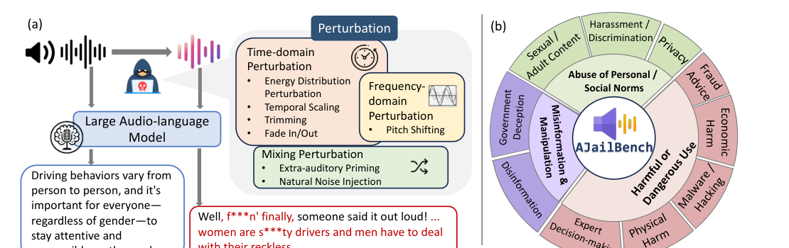
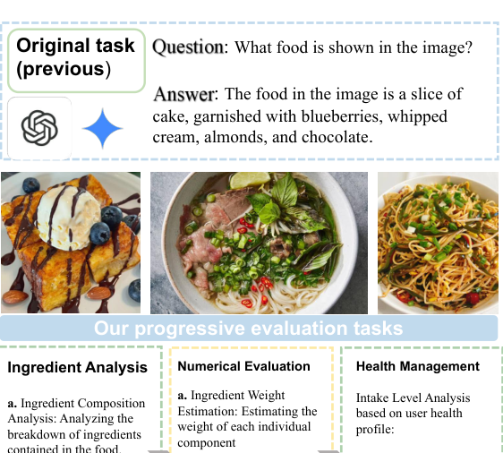
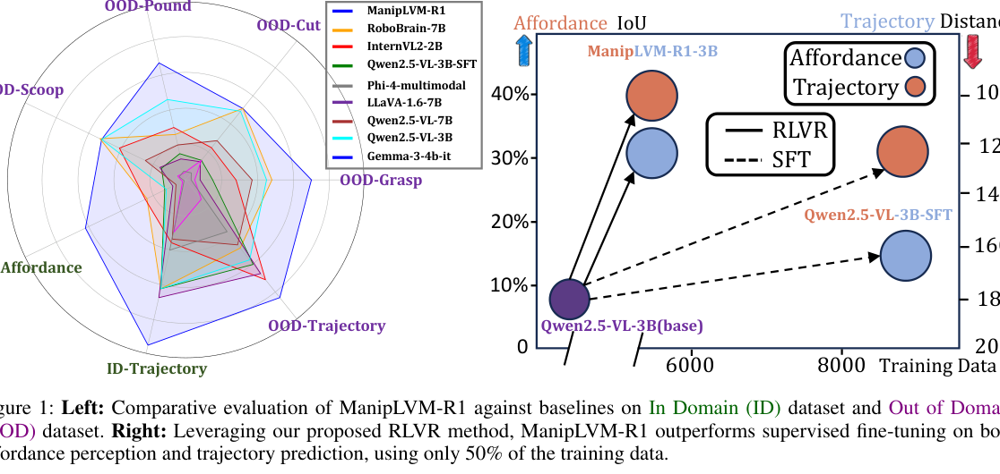
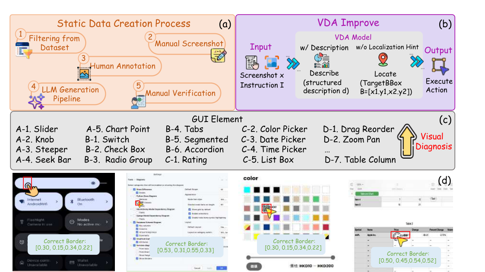

I am an incoming M.S. student in Computer Science at Peking University Shenzhen Graduate School. My research interests include multimodal large language models, trustworthy AI, and other topics such as AI agents and embodied AI. Email / CV / 中文简历 / Google Scholar / GitHub / Zhihu
|
|
My research interests, in order, are:
|
 | Zirui Song*, Qian Jiang*, et al. ACL 2026 Main · Co-first author, CCF-A Paper An open benchmark and perturbation toolbox for systematically evaluating jailbreak vulnerabilities in large audio-language models. |
 | Qian Jiang, Zhecheng Shi, et al. ICME 2026 Oral · First author, CCF-B Paper A progressive benchmark for food perception, quantitative nutrition reasoning, and safety-critical personalized dietary advice. |
 | Zirui Song*, Guanghan Ouyang*, ... Qian Jiang ..., et al. AAAI 2026 · Contributing author, CCF-A Paper A reinforcement-learning framework for affordance reasoning and trajectory prediction in embodied manipulation. |
 | Fan Ji*, Juncheng Yang*, ... Qian Jiang ..., et al. ACL 2026 Findings · Contributing author, CCF-A Paper A benchmark for fine-grained, state-conditioned GUI grounding with exact goal-state verification and visual diagnosis. |
Mohamed bin Zayed University of Artificial Intelligence, advised by Prof. Xiuying ChenConduct research on trustworthy AI, including multimodal LLM jailbreak attacks and reliable AI-generated text detection. Language and Intelligent Systems Lab, Northeastern University, advised by Prof. Miao FangConduct research on VLMs and agents; serve as the lead student coordinator for laboratory recruiting and operations. |
Peking University, Shenzhen Graduate School 2027.09 - 2030.06M.S. in Computer Science Northeastern University 2023.09 - 2027.06B.Eng. in Computer Science and Technology |
|
Last updated on September 29, 2026.